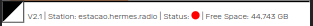

Next: Appendix - technical information Up: User manual Previous: E-mail Contents
|
 |
In case of problems with the antenna, a red led in the antenna (ANT) position will light up on the HERMES box (not the web interface). In this case, check the correct position of the power supply wires and check the position and integrity of the antenna, RF connectors, coaxial cable, and the transmitter. After checking that, it will be necessary to rest the antenna protection on the radio config section on the web interface for the radio transmit again.
If the messages in the transmission list are not being transmitted at the allotted time, check that the radio settings have not been changed by going to the Admin tab. If that is not the case, it's possible that the other stations are offline.